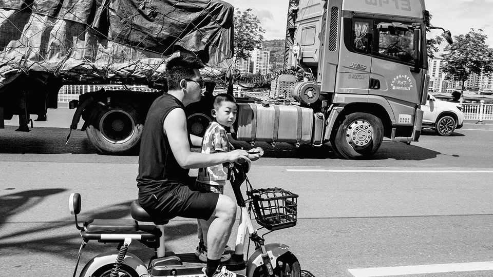

China’s high-tech rise is leaving much of the country behind
That could make a starkly unequal country even more so
June 4th 2026

LIKE MANY cities in China’s hinterland, Tianshui, in the western province of Gansu, is full of dusty and disused factories. But over the past decade it has also become an unlikely high-tech hub. New industrial parks have sprouted, offering companies cheap energy, financing and land deals. The city has already built an exhibition hall to display the zippy products it hopes to make in the future, called “Tianshui Industry 2050”.
All this will please officials in far-off Beijing. They want China’s rust belt to reinvent itself with technology. Just recently they released yet another plan for urban renewal, calling for the transformation of stagnant cities into “innovative” places that can offer their inhabitants a “high-quality life”.
Yet for all the fanfare, the people of Tianshui are not much better off. The new factories have failed to offset a broader slowdown in the city’s economy: ten years ago Tianshui’s GDP per person was 16% of Beijing’s; now it is 14%. In 2025 the city’s economy grew at a rate two percentage points slower than the national average. Nor, say locals, have the highly automated facilities created many jobs for them. Throngs of young people are leaving in search of better opportunities. Over the past decade, its population has shrunk by nearly half a million to 2.9m. At this rate, by 2050 there will be few workers left.

The tale of Tianshui shows the limits of China’s big bet on advanced manufacturing. The Communist Party has decided the country’s economic future lies in making world-beating technology. So hundreds of cities across the country are, like Tianshui, trying hard to do so. But while the high-tech drive has helped some brainy, connected and wealthy cities become even richer, most of those in the hinterland lack the supply chains or talent to take advantage of it. After all, some 60% of China’s workforce—about 500m people—do not even have a high-school education. Many of them live in smaller and poorer cities.
For centuries Tianshui was more a cultural than an economic hub. Legend has it that China’s first emperor, a serpent-bodied demi-god, was born there; Buddhist grottoes have been cut out of the cliffs nearby. But in the 1960s Tianshui industrialised. It became an important cog in the state-planned economy; its factories made tractors, ball bearings and matches.
Dormitories, schools and hospitals were built to cater to the swelling labour force. One of the workers was Ms Dong, now in her 80s, who enjoyed an ultra-stable “iron rice bowl” job at a printing press. She retired in her 40s with a good pension and a guarantee that her son could inherit her job. But most local factories were not competitive enough to survive China’s bumpy transition to a more market-driven economy in the 1980s and 1990s.
In the past ten years a new generation of high-tech factories, making gizmos such as sensors and machine tools, has sprung up. But they have not brought many jobs with them. An exhibit at Tianshui’s museum displays snapshots of the city’s factory floors over the decades. Each shows fewer workers and more robots. Most of the factory positions that are available pay around 3,000 yuan ($440) a month, according to locals, half what they could get in a big city like Shanghai. “I’d like to stay here to settle down, but there’s just no good jobs for young people,” says Wen Jin, a 27-year-old Tianshui native who has moved to Jiangsu province, a wealthy eastern region. The city’s best days are firmly in the past, reckons Ma Xin, another local in his 20s who is hoping to get out.
High-tech industries do create well-paid jobs as well, in research and development, for instance. But these positions are mainly clustered in big cities near China’s coast, like Beijing, Shanghai and Shenzhen, which boast the best universities, brightest graduates and access to the densest supply chains. Tech-sector salaries in such places have shot up in recent years, some topping 1m yuan a year. But few parts of inland China have a chance of attracting such stellar jobs, explains Dan Wang of Eurasia Group, a consultancy. “The vast majority of Chinese cities are stuck with what they have.”
Even as Tianshui is unable to gain from China’s new economic model, it struggles with the problems of the old one. China’s growth has slowed in recent years thanks, in large part, to a lingering property crisis that is gripping the country. House prices have fallen fastest in smaller cities like Tianshui. Unfinished concrete flats litter the city’s outskirts; investment in property there fell by over 40% last year. This in turn has been a drag on consumption because people feel poorer. Total retail sales in Tianshui slipped by a little over 5% in 2025. Gloomy walks through its malls reveal shuttered shops and empty restaurants.
There is a risk that these trends, multiplied across China’s smaller cities, will cause the gaps between the country’s haves and have-nots to widen further. The economic slowdown seems to have hit the poor hardest, according to data compiled by Li Shi, a professor at Zhejiang University in the eastern city of Hangzhou. In a paper published in April he cited surveys showing that China’s bottom tenth of workers by income saw their wages rise by only 2% per year from 2018 to 2023, compared with an average annual growth rate of around 5%.
China’s government knows that high-tech factories are not an economic panacea. Investment in machinery and other physical assets “has fuelled China’s economic boom, but its returns have gradually declined”, noted Xinhua, the official state news agency, earlier this year. China’s latest five-year plan, which was released in March and covers the period to 2030, called for “investing in people” as well as factories, to make the economy more equal. In practice, that would mean much more government spending on education, particularly for children from poor families, giving them the skills and knowledge to get better-paid jobs.
But as the people of Tianshui would attest, that is easier said than done. The city’s budget is far smaller than those of wealthy places—it spends less than one-third of the amount per pupil in school that Beijing does, for example. And the economic downturn threatens to turn this into a cycle of decline; the city’s fiscal revenues fell by nearly a tenth last year. Few of Tianshui’s students ever make it to the country’s best universities. “It’s too difficult for children to compete here,” says Shi Tingting, the mother of a 12-year-old girl. “They end up trapped.” ■
Subscribers can sign up to Drum Tower, our new weekly newsletter, to understand what the world makes of China—and what China makes of the world.